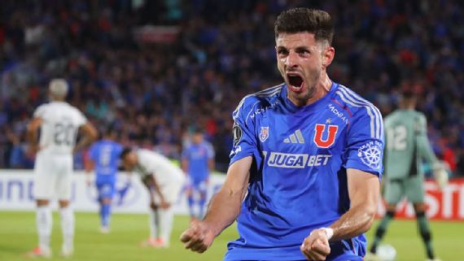
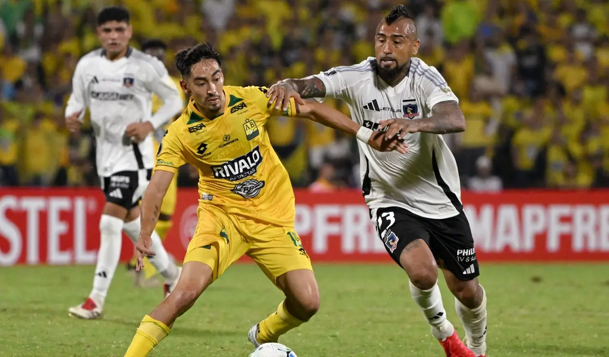
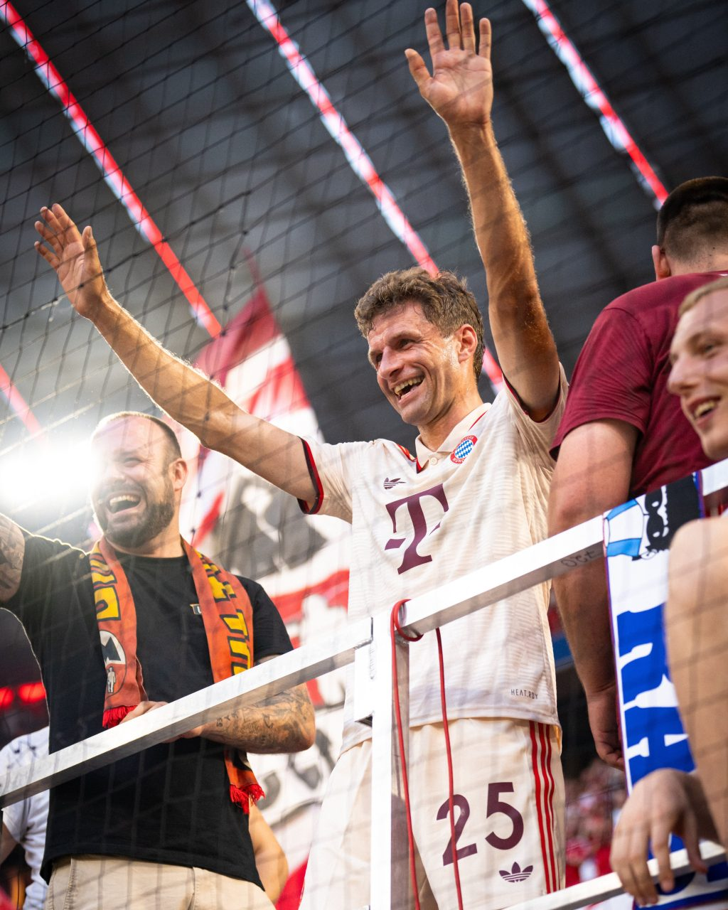

Universidad de Chile logró este miércoles una de sus victorias más resonantes de los últimos años al derrotar por 1-0 al campeón defensor, Botafogo, en el Estadio Nacional, en encuentro válido por la primera fecha del Grupo A de la CONMEBOL Libertadores 2025.
Colo Colo tuvo que sufrir y mucho para poder conseguir su primer punto en la Copa Libertadores. El Cacique debutó con un empate agónico por 3 a 3 ante Atlético Bucaramanga, en un partido que tuvo de todo. El equipo de Jorge Almirón tuvo una noche para el olvido, pero que a puro corazón logró transformar en una historia épica. Una con la que respiran un poco más tranquilos y que les deja una gran tarea si quieren pelear de verdad en el plano internacional.
Thomas Müller no continuará en el Bayern Múnich tras 25 años El multicampeón con el Bayern Múnich, Thomas Müller, jugará sus últimos partidos con la camiseta del gigante de Baviera en la nueva edición del mundial de clubes que se disputará en junio, ya que no se renovó su contrato con el equipo de sus amores. Müller llegó el año 2000 al Bayern, solo cuando tenía 10 años de edad, jugando toda su carrera en el equipo y ahora tendrá que buscar nuevos horizontes.
